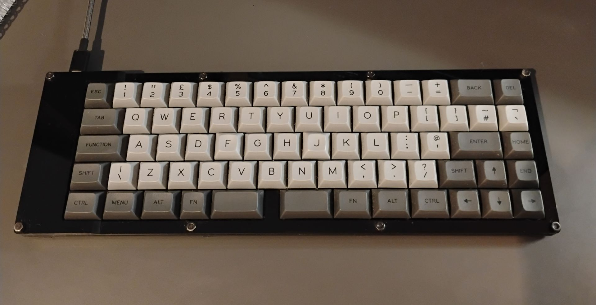
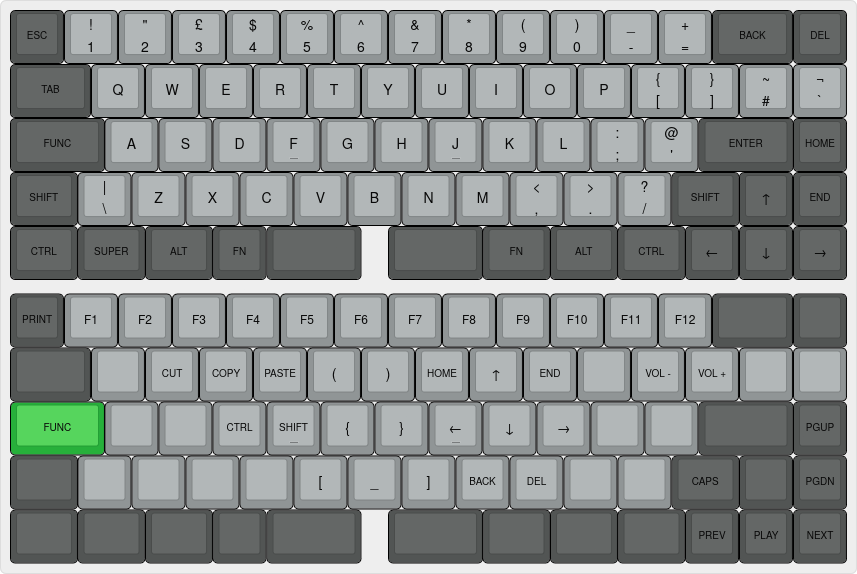
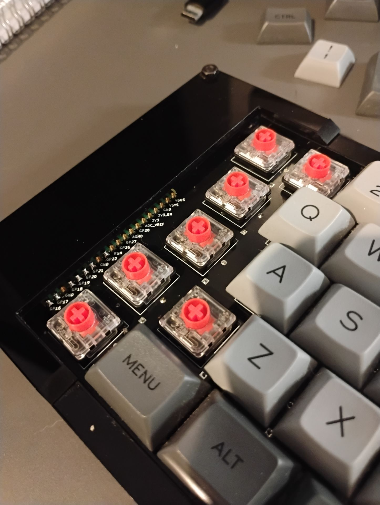

/ Projects
Custom Keyboard
After learning to touch-type properly during Covid I quickly became obsessed with doing anything else I could to optimise my typing setup. That lead to me learning how to design and build my own keyboards, from scratch. My latest build, seen below is built around a number of key features. The most significant is the lack of any keys longer than 1.75u. This avoids the need for stabilizers - the finicky metal bars that can cause the dreaded 'rattle'

- Bespoke PCB running a Raspberry Pico MCU
- Laser cut acrylic sandwich case
- KMK Firmware
- Custom key layers focused on programming efficiency
- No stabilizers
- Low Profile Cherry switches
- Small form factor
- Standard UK QWERTY layout
- DSA keycaps support (with some bespoke prints)
A key part of what I love so much about a custom keyboard is having custom layer keys to bring inputs closer to the home row. My most signficant use of his is replacing the CAPSLOCK key with a Function key. Holding this key with my pinky rebinds all keys around the home row into keys that benefit programming (navigation and brackets most significantly). I love the comfort this brings as I rarely have to leave the default home row position now.


A new design is in the works with even more optimizations and I'll be making all the files for that open source.